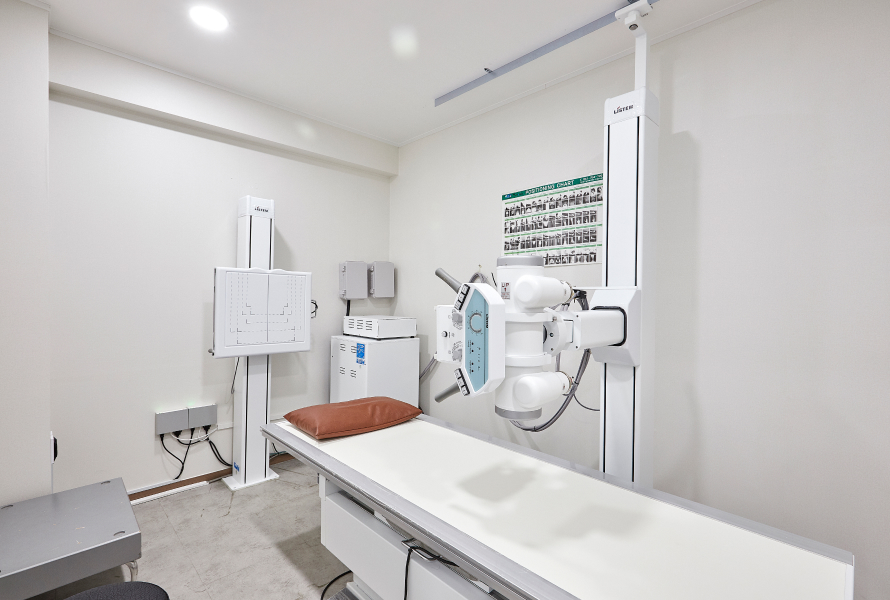
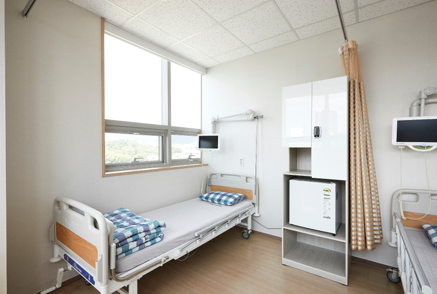
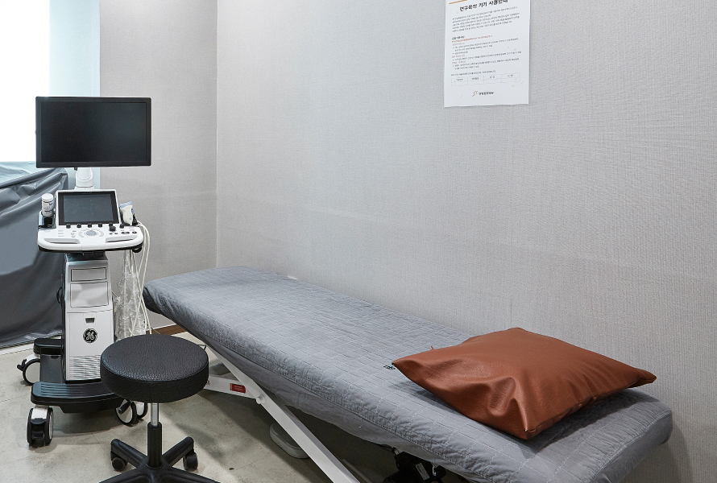
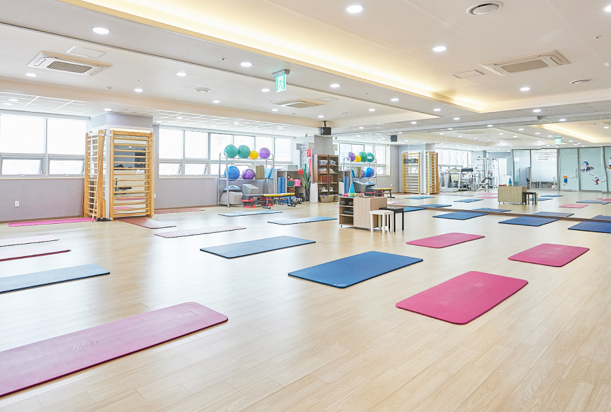
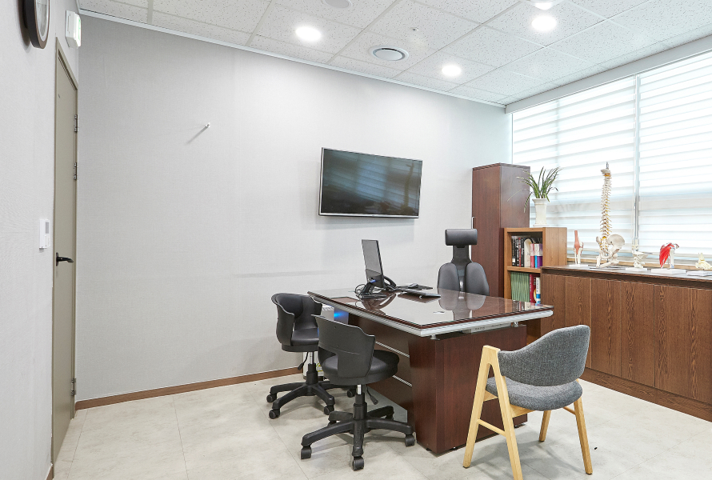

평일 09:00 - 18:00 | 토요일 09:00 - 13:00 | 일요일/공휴일 휴진
건강 정보와 치료 후기를 확인하세요
일상에서 실천할 수 있는 한방 건강 정보를 알려드립니다





수인당 한의원에서 치료받으신 분들의 후기입니다
"오랫동안 허리 통증으로 고생했는데, 추나 요법과 침 치료를 꾸준히 받으니 많이 좋아졌습니다. 원장님이 친절하게 설명해 주셔서 믿음이 갔습니다."
"갱년기 증상이 심해서 힘들었는데, 한약 처방 받고 많이 편해졌어요. 잠도 잘 오고 화끈거림도 줄었습니다. 감사합니다."
"만성 소화불량으로 여러 병원을 다녔는데 효과가 없었어요. 수인당에서 체질에 맞는 한약을 처방받고 속이 편해졌습니다."
"무릎이 아파서 계단 오르기도 힘들었는데, 침과 뜸 치료 받으면서 많이 나아졌어요. 이제 산책도 할 수 있게 되었습니다."
"항상 피곤하고 무기력했는데, 보약 처방 받고 에너지가 생겼어요. 아침에 일어나기가 한결 수월해졌습니다."
"오십견으로 팔을 들기도 힘들었는데, 꾸준히 치료받으니 이제 일상생활에 지장이 없어요. 정말 감사드립니다."
전문 의료진이 친절하게 상담해 드립니다